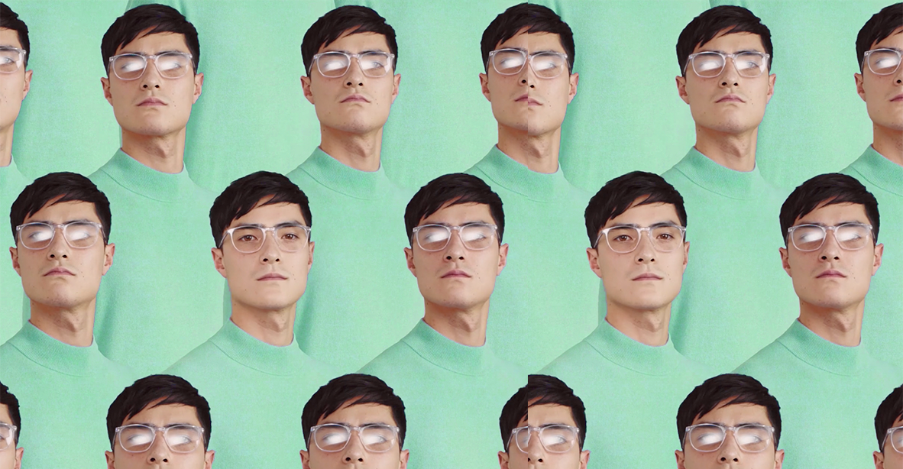

Andrea Bax is an
Italian1 freelance
Art director2 and
Designer3.
He is
curious4, aesthetic-focused, sensitive to
design trends5, gentleman with a background in
Arts6.
His projects are basically focused on
Visual Design and Animation7. Since '90s.

Bax Who?
Graduated in Graphic Design at Istituto Europeo di Design in Milan. He collaborate from the beginning with the most important Motion Design Studio in Milan, such as FastForward, Ditroit, Bonsaininja Studio. He became Art Director at Revolution Department, in Milan.
Now he is a Freelance Art Director and Designer and always love to share projects with the best team of collaborators at that time.
He works directly with Brands, Advertising Agencies and Design Studios. In continuous search of talented people, if you're interested in just drop a line at welcomebax@gmail.com
He has worked for clients, Tv channels and brands like: Mtv, Rai, Sky, Discovery Channel, Google, Redbull, DolceGabbana, Giorgio Armani, Bulgari, Valentino, Gucci, Fendi, Diesel and many more.
Interests and Skills
- Art Direction
- Graphic Design
- Motion Design
- Brand Identity
- Video Direction
- Storyboarding
- Typography
- Interaction Design
- 3d Stuff
- GIF
Special Projects and Awards
- 12.2011 _ Live visuals for ELITA "Path of the Rythm" @Teatro Franco Parenti, Milano ITALY
- 04.2012 _ Video projection for KEY Kitchen @Fuorisalone SUPERSTUDIO, Milano ITALY
- 11.2012 _ Motion Design Workshop by BONSAININJA @Film Festival, Verona ITALY
- 05.2013 _ Interaction Design project by BONSAININJA for HEYDAR ALIEV MUSEUM @Baku, AZEIRBAIJAN
- 12.2013 _ Visuals/Video projection for Leonard ETO @Teatro TRIENNALE, Milano ITALY
- 07.2014 _ Video Teaser for BLOOP Festival @San Antoni, IBIZA
- 10.2014 _ Visuals for ELISA concert @Unipol Arena Bologna ITALY
- 01.2015 _ Opening Titles for "Reach the Horizon" PARKOUR Film
- 03.2015 _ Visual projection for XStudio, @X54 Sydney, AUSTRALIA
- 03.2015 _ Graphic Package for "The VOICE of Italy" on RAI2, @Studi RAI Mecenate, Milano ITALY
- 05.2015 _ Padiglione Azerbaijan project by Bonsaininja Studio and Simmetrico @EXPO Milano ITALY
- 05.2015 _ Video Visuals for EDISON "OPEN" @Fuori EXPO, Giardino della Triennale, Milano ITALY
- 08.2015 _ Video Documentary ANDE TRAIL, RUNNING FOR THE ESSENTIAL @Cordillera Blanca, Ancash PERÙ
- 09.2015 _ 1 Place @Best Event Awards for EDISON Open 4EXPO @Teatro Franco Parenti, Milano ITALY
- 01.2016 _ 5 Collages Prints for Capodopera stand @IMM Cologne for Design Week. @Cologne, GERMANY
- 11.2017 _ Motion Design x "Oh Vita!" by Lorenzo Jovanotti @GaeAulenti, Milano ITALY
- 11.2018 _ ADCI AWARD - SILVER Pitti Uomo 2018 - Film @ADCI, ITALY